Codex du personnage
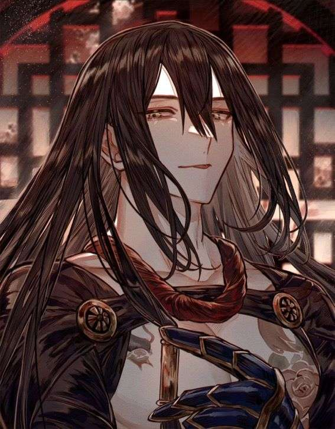
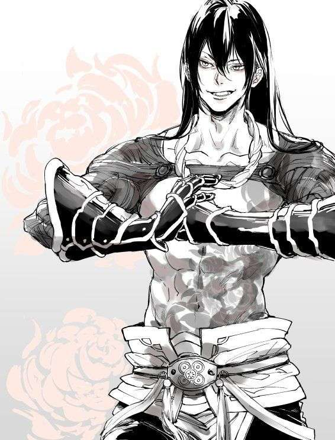
Zhao Yun est un combattant au tempérament arrogant, lucide et opportuniste. Il n’a pas la rigidité des anciens maîtres ni l’obsession idéologique de ses rivaux. Il vit dans l’instant, analyse chaque situation rapidement et choisit toujours la solution la plus efficace pour atteindre son objectif. Il peut paraître calme, presque détaché, mais derrière cette façade se cache un esprit calculateur. Il n’agit jamais sans intérêt. Ce n’est ni un idéaliste, ni un disciple aveugle : il avance uniquement si cela le fait progresser.
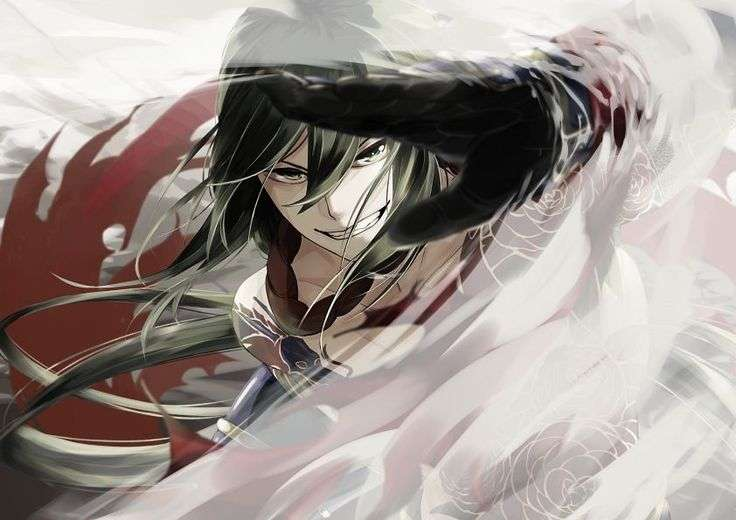
Des gants lourds forgés dans un métal inconnu, spécialement conçus pour Zhao Peng.
Ces gants sont à la fois une arme et un bouclier :
Capables de bloquer les armes blanches Capables de dissiper l’impact des projectiles métalliques comme des balles et suffisamment lourds pour transformer chaque coup en frappe écrasante,mais exigeant une maîtrise parfaite du timing et du placement
Mal utilisés, ils ralentissent le combattant. Parfaitement maîtrisés, ils deviennent une défense quasi impénétrable.
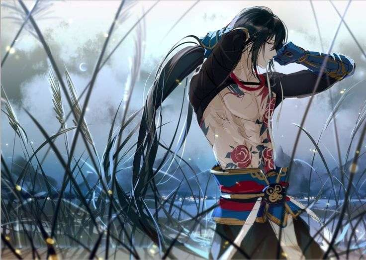
Il existe, au cœur des montagnes orientales, des terres où les hommes ne naissent pas seulement avec un nom, mais avec un héritage. Là-bas, l'art martial n'était ni un divertissement, ni une arme destinée à la guerre. Il était une religion, une langue silencieuse par laquelle les générations se transmettaient leur savoir. Les anciens disaient que chaque mouvement possédait une âme et que celui qui parvenait à les réunir toutes approchait l'équilibre parfait : le Yi Yang. C'est dans cette contrée que naquit Zhao Yun, fils de Zhao Wei, héritier de la branche Zhao, et de Lin Xiu, l'une des plus brillantes maîtresses de sa génération. Les premières années de sa vie furent paisibles.
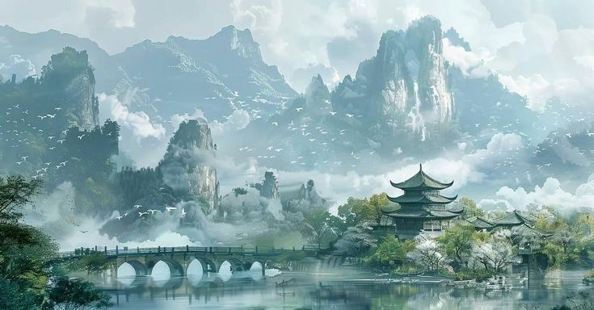
La demeure familiale dominait une vallée de bambous où l'on entendait, du matin jusqu'au crépuscule, le chant du vent se mêler aux coups d'entraînement. Zhao Yun grandit dans cette harmonie, entouré d'une famille que beaucoup enviaient. Son père incarnait la force, et sa mère incarnait la tradition.
Tous deux étaient des maîtres dont les disciples parcouraient parfois plusieurs semaines pour recevoir un simple conseil. Quelques années plus tard naquirent son troisième frère:Zhao Ming, un enfant d'une douceur étonnante, mais dont le talent semblait déjà dépasser celui de nombreux adultes. Les trois garçons grandirent ensemble, partageant les mêmes repas, les mêmes entraînements et les mêmes rêves.
Leur mère leur enseignait les fondements du Yi Yang, comme l'exigeait la coutume. Chaque posture était répétée jusqu'à devenir naturelle, chaque respiration comptait autant qu'un coup porté. Zhao Yun se montrait studieux. Jiang Hun préférait improviser. Quant au jeune Ming, il apprenait avec une facilité presque inquiétante. Mais derrière cette apparente sérénité, grandissait une fracture que personne ne voyait encore. Au fil des années, Zhao Wei découvrit d'anciens manuscrits oubliés, rédigés bien avant les traditions modernes. Ils décrivaient des techniques perdues, des formes de combat que plus personne n'osait pratiquer. Il les étudia dans le plus grand secret car à ses yeux, ces écrits n'étaient pas une hérésie ; ils représentaient une évolution.
Pourquoi des techniques capables de sauver des vies devraient-elles disparaître simplement parce qu'elles ne respectaient plus les coutumes ?
Lin Xiu s'opposa immédiatement à cette idée. Pour elle, les traditions existaient pour préserver l'équilibre du Yi Yang. Si les femmes étaient seules autorisées à transmettre les arts martiaux, ce n'était pas par orgueil, mais parce que tel était l'ordre établi depuis des lustres. Leur désaccord, d'abord discret, devint une querelle, et la querelle devint un conflit, et le conflit finit par dépasser les murs de leur demeure.
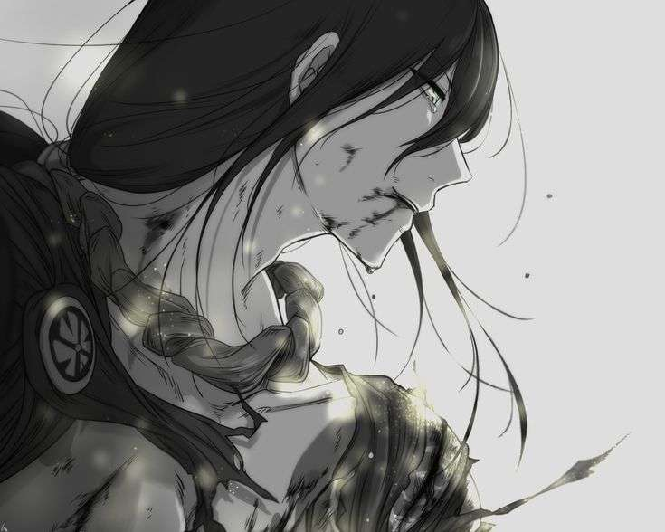
Les anciens furent appelés. Après de longues délibérations, ils rendirent leur jugement, selon les lois du clan, un Duel Rituel aurait lieu. Le vainqueur déciderait de l'avenir de la branche Zhao.
Mais le rituel imposait une seconde règle, plus terrible encore. Les héritiers devaient choisir le parent dont ils soutenaient la vision. Et si leur camp venait à être vaincu… Ils partageraient son destin. Le jour du duel arriva lorsque Zhao Yun atteignit sa dix-huitième année, la vallée entière s'était tue.
Les disciples, les anciens et les maîtres entouraient l'arène de pierre où deux époux, qui s'étaient autrefois juré fidélité, allaient désormais s'affronter jusqu'à la mort. Zhao Yun prit place derrière son père. Quant au jeune Zhao Ming, les larmes aux yeux, rejoignit sa mère. Le vent lui-même semblait retenir son souffle. Et lorsque les deux maîtres adoptèrent leur garde… Le destin de toute une famille bascula.
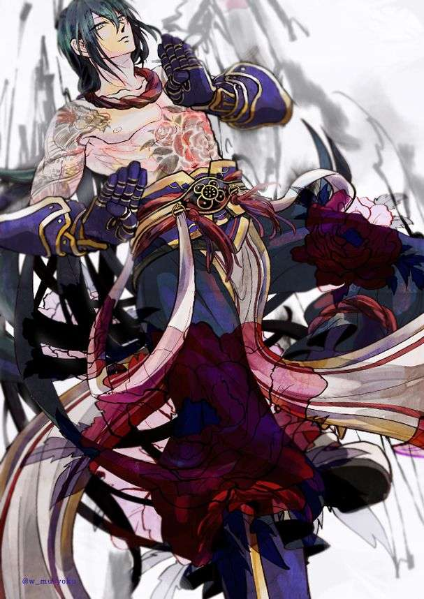
Le duel dura jusqu'au coucher du soleil. Nul ne sut dire lequel des deux époux avait dominé l'autre, tant leurs techniques semblaient se répondre comme deux moitiés d'un même souffle. Mais lorsqu'enfin le silence retomba sur l'arène, Lin Xiu gisait sur la pierre, le regard déjà vide, tandis que Zhao Wei demeurait debout, immobile, le poing encore tremblant d'avoir accompli l'irréparable. Il n'y eut ni cri de victoire, ni acclamation. Seulement le poids d'une tradition plus ancienne que tous ceux qui l'avaient contemplée.
Selon les lois du rituel, les héritiers ayant choisi le camp du vaincu devaient partager son destin. Le plus jeune des frères, Zhao Ming, s'avança de lui-même. Malgré les supplications de quelques anciens, il demeura droit, le visage serein. Zhao Wei, lui, resta figé. Il avait pu lever la main sur son épouse au nom de l'honneur, mais aucun père ne pouvait lever son arme sur son propre enfant.
Le temps semblait suspendu.
Alors Zhao Yun rompit le silence.
« Père... si les lois cessent d'être respectées aujourd'hui, alors tout ce pour quoi elle est morte n'aura servi à rien. »
Ces paroles transpercèrent Zhao Wei plus sûrement qu'une lame. Les témoins racontèrent qu'il pleura pour la première et unique fois de son existence. Puis il accomplit ce que le rituel exigeait. Lorsque le soleil disparut derrière les montagnes, la branche Zhao avait perdu une mère... et un fils.
Les années qui suivirent furent celles de l'exil.
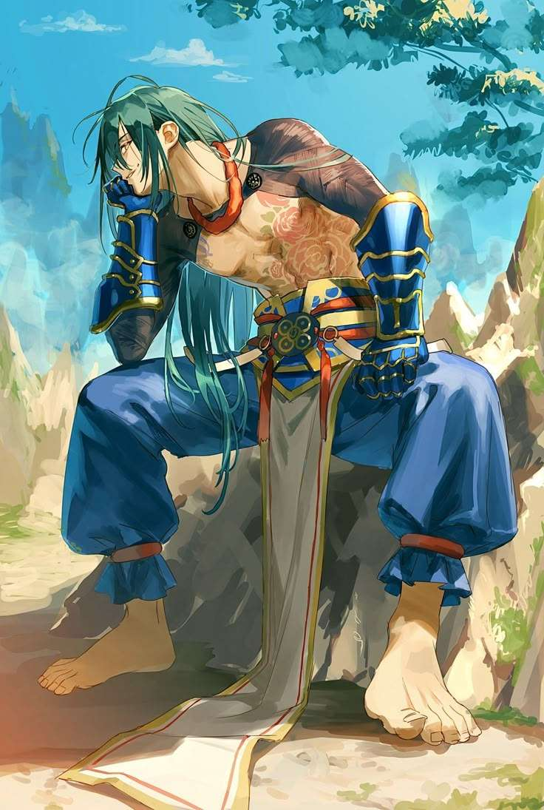
Dégoûté par ceux qui avaient préféré les traditions à leur propre sang, Zhao Wei quitta les siens et rejoignit un ancien refuge oublié : le Sanctuaire. Là vivaient des hommes rejetés par les clans, des érudits, des combattants et des maîtres ayant consacré leur existence à préserver des techniques que le monde refusait désormais d'enseigner.
C'est en ces lieux que Zhao Yun retrouva Fu Wu Jin, le Maître Aveugle, vieil ami de son père.
Sous son regard invisible, les jours devinrent des mois, puis des années. Zhao Yun apprit à écouter le vent avant de frapper, à sentir la moindre vibration du sol, tandis que Zhao Jiang Hun perfectionnait sa vitesse jusqu'à rendre ses mouvements presque insaisissables.
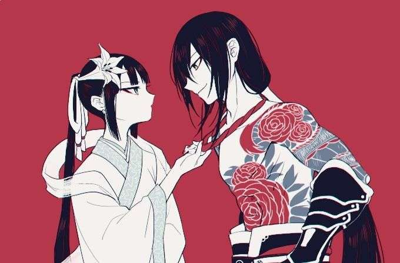
Pour la première fois depuis longtemps, la paix semblait leur être rendue. Désireux d'apaiser les tensions entre les clans, Zhao Wei accepta une ancienne coutume. Zhao Yun fut promis à Mei Lian, héritière d'une grande famille martiale. Cette union devait rapprocher deux visions du Yi Yang et offrir un avenir plus stable aux générations futures. Avec le temps, ce mariage arrangé se transforma en un attachement sincère.
Mei Lian possédait un tempérament affirmé. Intelligente, vive et dotée d'un caractère bien plus fort qu'il n'y paraissait, elle menait naturellement leur quotidien. Zhao Yun ne se laissait jamais dominer ; il défendait ses convictions avec fermeté. Pourtant, il acceptait volontiers de lui céder les petites batailles de la vie, amusé par son assurance et conscient qu'elle savait souvent où elle voulait aller. Cette différence de caractère faisait naître une complicité que beaucoup leur enviaient.
Pendant quatre années, ils vécurent heureux. Mais peu à peu, Mei Lian comprit qu'elle ne pourrait jamais détourner Zhao Yun de sa véritable vocation. Son cœur appartenait avant tout à sa quête martiale. Elle ne parviendrait ni à le changer, ni à faire de lui l'homme qu'elle imaginait pour construire l'avenir auquel elle aspirait.
Un matin, elle s'en alla. Elle ne laissa qu'une courte lettre dans laquelle elle écrivait qu'elle refusait de consacrer sa vie à un homme dont le premier amour serait toujours les arts martiaux. Elle choisit une existence plus paisible, plus sûre, auprès d'un homme capable de lui offrir la vie qu'elle désirait. Zhao Yun ne lui en voulut jamais d'être partie.
En revanche, il ne pardonna jamais qu'elle ait décidé seule de mettre un terme à leur histoire.
À partir de ce jour, il cessa de croire que les liens du cœur pouvaient durer plus longtemps que la volonté d'un combattant. Son unique promesse serait désormais faite à sa propre voie, enfin, jusqu'au jour peut-être quelqu'un pourrait lui faire changer d'avis qui sait?
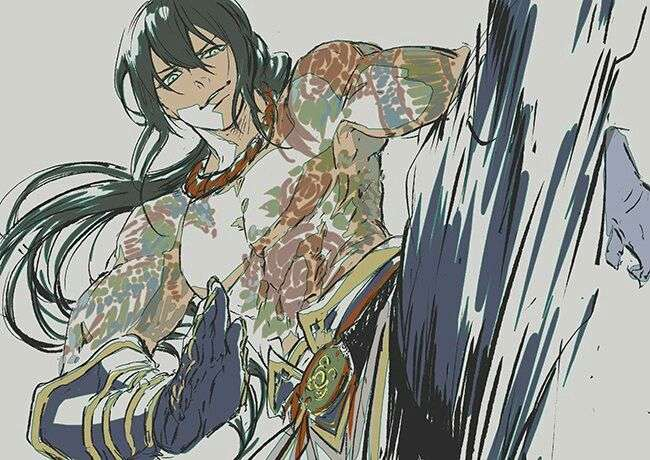
Peu après, les deux frères prirent une décision. Le monde était vaste, et pour devenir meilleurs, il fallait voyager pour devenir meilleurs ou se perfectionner, alors les deux frères prendraient des chemins différents. Zhao Jiang Hun, parti vers le sud, alors que Zhao Yun, lui, tournerait son regard vers le Nord.
Au-delà des montagnes s'étendait Arcadia, une terre réputée pour abriter de grands guerriers, les plus féroces combattants et des disciplines inconnues du Yi Yang.
Avant de quitter le Sanctuaire, Zhao Wei posa une main sur l'épaule de son fils.
« Ne cherche pas seulement à vaincre les autres, Zhao Yun. Trouve une voie qu'aucun homme n'a encore empruntée. »
Et sans se retourner, Zhao Yun prit la route du Nord.
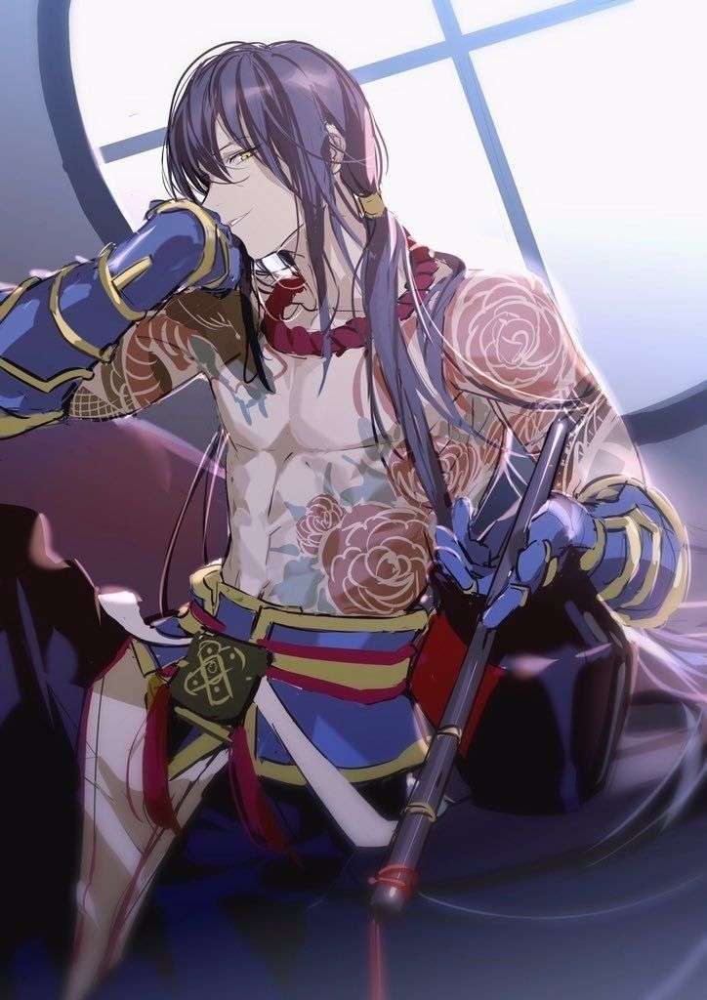
C'est ainsi que commença le voyage. À son arrivée en Arcadia, Zhao Yun comprit rapidement qu'il ne serait jamais considéré comme l'un des leurs. Le royaume se méfiait profondément des étrangers, et plus encore de ceux qui pénétraient sur son territoire sans autorisation. Entré clandestinement par les cols montagneux du sud, il effaça jusqu'à son nom, ne révélant que le strict nécessaire et évitant d'attirer l'attention des autorités. Il était connu, de fait de ses tatouages et de ses quelques assassinat sous le nom de la Rose Écarlate.
Pour survivre, il vendit ce qu'il maîtrisait le mieux : son art du combat.
Dans les tavernes, les marchés et les quartiers les plus mal famés, il se fit connaître comme un mercenaire solitaire, acceptant les contrats que d'autres refusaient. Escorte, chasse aux criminels, éliminations ciblées, protection de convois ou règlements de comptes... Zhao Yun ne prêtait allégeance à aucune bannière. Seule la valeur du défi, ou parfois la nécessité de gagner sa vie, guidait ses choix.
Lorsque les contrats se faisaient rares, il gagnait quelques pièces d'une manière plus inattendue. Les habitants d'Arcadia, fascinés par les mouvements fluides de son art martial, le prenaient souvent pour un danseur venu de contrée lointaine. Il acceptait alors de se produire lors de fêtes ou de réceptions, où ses enchaînements, semblables à une danse, suscitait autant d'admiration que d'étrangeté. Peu savaient que chacun de ces pas avait été conçu pour tuer.
Cette double existence lui permit de rester dans l'ombre. Tantôt mercenaire, tantôt assassin, tantôt simple artiste de passage, Zhao Yun traversait Arcadia comme un fantôme. Il pouvait accepter un contrat de l'Échiquier de Sang un jour, puis travailler pour les rebelles dès le lendemain, sans jamais partager leurs idéaux. Pour lui, ces missions n'étaient qu'un moyen de poursuivre son véritable objectif : affronter des combattants toujours plus puissants et perfectionner le style qu'il avait juré de rendre supérieur à tous les autres.